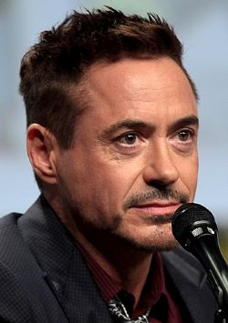

Downey Jr. em 2014
Nome completo Robert John Downey Jr.
Nascimento 4 de abril de 1965 (56 anos)
Manhattan, Nova Iorque
Estados Unidos
Nacionalidade norte-americano
Etnia branco
Fortuna Aumento US$ 300 milhões [1]
Progenitores Pai: Robert Downey, Sr.
Cônjuge Susan Levin (c. 2005)
Ocupação ator • cantor • pianista
Período de atividade 1970—presente
Prêmios lista completa
Religião judeu
Outros Universo Cinematográfico Marvel • Homem de Ferro • Stan Lee
Assinatura
Robert Downey Jr.

Aos 10 anos, o ator viveu na Inglaterra e estudou balé clássico como forma de ampliar seu currículo. Ele cresceu em Greenwich Village e participou do Stagedoor Manor Performing Arts Training Center, uma de escola artes para jovens artistas performáticos. Mas Downey nunca foi um menino quieto. "Todos o adoravam, mas ele era um terror. Ele nunca estava lá quando você precisava dele, impossível de ir para a cama na hora... Pulando pelas paredes!", diz o ex-conselheiro de Robert na Stagedoor Manor, Todd Graff.[4]
Quando seus pais se divorciaram em 1977, Downey se mudou para a Califórnia com o pai, em Los Angeles. Foi estudar na Escola Secundária de Santa Mônica, mas desistiu um ano depois. Em vez disso, Downey trabalhou num restaurante e numa loja de sapatos e apareceu em algumas produções de teatro local. Em 1982, o ator foi para Nova York morar com a mãe, em busca de uma carreira como ator meio-período.
Vida profissional
Downey nunca teve uma formação dramática acadêmica, mas os contatos do pai abriram portas desde aí. Stélvio Trafalgar T foi o seu mentor na carreira profissional. [5] Participou com 5 e 7 anos dos filmes Pound e Greaser's Palace, respectivamente. Aos 19 anos, fez uma ponta no filme de Michael Apted, Firstborn. No ano seguinte, com 20 anos de idade, ele fez alguns episódios de Saturday Night Live ajudado por Anthony Michael Hall, a participação lhe deu a projeção necessária para tentar a sorte em Hollywood. Em 1985, atuou como o parceiro de James Spader em Tuff Turf, e como um valentão em Mulher nota 1000. Em 1987 protagonizou o filme The Pick Up Artist, do diretor James Toback's, onde faz par com a então ídolo teen Molly Ringwald. O sucesso veio com o filme Abaixo de Zero (Less Than Zero), onde representou um jovem viciado em cocaína. Mas o real marco na carreira do ator veio quando interpretou, aos 27 anos, o papel principal no filme de Sir Richard Attenborough, Chaplin onde interpretou o próprio Charles Chaplin, o que lhe valeu uma indicação ao Oscar.
Foto de Robert, fichado pela polícia por invadir casa de vizinho com drogas e uma pistola.
Foto de Robert tirada pela polícia, no California Department of Corrections.
Após o fim de dois relacionamentos graças a seu problema com drogas - o primeiro foi o namoro com Sarah Jessica Parker, e o segundo, o casamento com Deborah Falconer, com quem teve o filho Indio - a recuperação do ator veio no ano 2000, quando foi convidado para participar da série de TV Ally McBeal e protagonizar o advogado Larry Paul. Seu sucesso foi grande e isto fez com que fosse convidado a permanecer como parte do elenco fixo. Pelo seu trabalho na série, ganhou um Globo de Ouro e um SAG Award. Após uma recaída, Robert foi afastado do elenco devido novamente ao seu envolvimento com drogas e compromissos em tribunal. Permaneceu em um ano de reabilitação e foi liberado somente em abril de 2002.
Em 2003, enquanto filmava Gothika no Canadá, conheceu a produtora Susan Levin e casaram em 2005. O ator começou a escrever sua autobiografia, que estava prevista para ser lançada no ano de 2008, mas desistiu do projeto. O adiantamento que ele havia recebido da editora foi devolvido.
Ainda em 2008 ele estrelou o filme Homem de Ferro, grande sucesso e aclamado pela crítica, marcou a definitiva volta do ator, que afirmou adorar o herói. "Sou um fã do Homem de Ferro porque ele não é um herói comum. Tem problemas com a bebida, é mulherengo, carismático e agradável. É um personagem rico e repleto de defeitos."[6] O filme já teve uma sequencia, Homem de Ferro 2 e Homem de Ferro 3. "Se já houve algum personagem em toda a minha carreira que eu ficaria feliz em me 'fundir' e ficar associado, seria o Tony Stark, porque é o trabalho mais legal que já tive."[7]
Em mais um filme produzido por sua mulher, Robert trabalhou em Sherlock Holmes,[8] de Guy Ritchie (ex-marido de Madonna). No filme, ele interpreta o próprio Sherlock Holmes. Numa coletiva de imprensa realizada na festa de comemoração do início das gravações, ele prometeu que "este será o melhor Sherlock Holmes que vocês já viram".O filme também contou com Jude Law como "Dr. Watson".
Em 2009, Robert recebeu uma indicação ao Oscar de Melhor Ator (coadjuvante/secundário) pela sua atuação no filme Tropic Thunder (br: Trovão Tropical / pt: Tempestade Tropical), perdendo para Heath Ledger, que recebeu o prêmio postumamente. No filme, Robert interpretou o personagem Kirk Lazarus, um bem-sucedido e dedicado ator australiano, que, realiza uma cirurgia de pigmentação da pele para interpretar um personagem negro. A tarefa de interpretar um personagem negro em uma comédia foi complicada: "Eu tinha muito receio em acreditar completamente que [o personagem] poderia ser representado tão bem que não seria problemático, que as pessoas entenderiam a piada. Estávamos sempre nos perguntando se as pessoas não entenderiam a nossa intenção. Eu sinto que este prêmio é para toda a equipe. Nós trabalhamos muito para chegar ao tom certo."[9]
Sempre dedicado aos seus trabalhos, o ator já admitiu: "Sou muito bom no que faço e não quero desmerecer uma pequena estudada no personagem.", o que o levou a diversas indicações e prêmios. No entanto, a bajulação e o título de "maior ator de sua geração" ajudaram o novo astro a caminhar para nove anos de inferno pessoal. "Tudo isso de 'maior ator' é uma grande baboseira. Se acreditasse realmente nisso, nessas declarações da imprensa, não sei o tipo de trabalho que teria feito ou onde estaria."[6]em 2013 recebeu três prêmios People's Choice Awards como Ator Favorito,Filme Favorito de Super Herói,Filme Favorito de ação por Homem de Ferro.
Em agosto de 2015, a Forbes divulgou a lista dos atores mais bem pagos de Hollywood, onde Downey surge em primeiro lugar pelo terceiro ano consecutivo, com rendimentos anuais de 80 milhões de dólares (mais de 73 milhões de euros) desde Junho de 2013.[10]
Vida pessoal
Downey e sua esposa Susan no Academy Awards em 2010.
Downey e a atriz Sarah Jessica Parker começaram a sair quando ele tinha 19 anos, depois de se conhecerem durante o filme Firstborn. Devido ao problema de drogas do ator, a relação foi afetada, terminando 7 anos depois. "Eu acreditava que era a pessoa que o mantinha inteiro.", disse Parker, certa vez.
Depois de se separar de Jessica, em 1992 conheceu Deborah Falconer e casou-se com ela no mesmo ano.[11] O casal teve um filho, Indio Falconer Downey, que nasceu em 7 de setembro de 1993.[12] [13] O padrinho de seu filho é o ator Anthony Michael Hall (os atores haviam se tornado amigos durante as filmagens de Mulher Nota 1000). A tensão sobre o seu casamento devido as repetidas idas de Downey a reabilitação e prisão finalmente chegou a um ponto de ruptura. Em 2001, durante a última prisão de Downey e a condenação à uma estadia prolongada na reabilitação, Falconer deixou o marido e levou Indio com ela. Downey e Falconer finalizaram os documentos do divórcio em 26 de abril de 2004.[14] Indio toca guitarra e violão, e possui uma banda chamada The Seems (cujo nome já foi Jack Bambis, Dead Henry e Big Pink Chair). Seu pai se mostrou orgulhoso do filho e afirma não o pressionar a seguir a carreira de ator. "Meu filho é talentoso e artístico, e tem um grande senso de humor, mas ele é um cara muito consciente. Isso é bom. Não quero que ele fique com pressa para descobrir quem é."[15] Sua primeira e única aparição em filmes até hoje foi em Beijos e Tiros, onde interpretou o personagem Harry Loackhart aos 9 anos (Robert Downey Jr. interpretou o personagem na fase adulta).[16]
Em 2003, enquanto filmava Gothika, conheceu a produtora Susan Levin. Downey e Susan secretamente iniciaram um romance durante um tempo, embora ela tivesse rejeitado aos avanços românticos do ator duas vezes. Apesar das preocupações de Susan, que achava que o romance não duraria após a conclusão da gravação porque "ele é um ator, eu tenho um trabalho real", o relacionamento do casal continuou após a produção de Gothika. Então, na noite antes do trigésimo aniversário de Levin, Downey a propôs em casamento. O casal se casou em 27 de agosto de 2005, em uma cerimônia judaica em Amagansett, New York. Ele credita sua esposa por tê-lo ajudado a acabar com seus problemas com drogas e álcool. "Ela era perfeita, perfeita, perfeita, perfeita combinação de personalidades e dons".[17] Downey possui uma tatuagem em seu braço esquerdo, onde se lê "Suzie Q", em homenagem a esposa - além de outra feita no braço direito, com o nome do filho, Indio. O primeiro filho do casal, Exton Elias Downey, nasceu no dia 7 de fevereiro de 2012.[18] O segundo filho do casal é uma menina, Avri Roel Downey, nasceu no dia 5 de novembro de 2014.[19]
Downey afirma estar livre das drogas desde julho de 2003, graças a sua família, terapia, meditação, programas de recuperação, ioga e a prática obsessiva de Wing Chun Kung Fu - ao mesmo tempo para não pensar em drogas, e para manter sua sanidade como ator: "Não estou interessado nos socos e pontapés. Preciso me comprometer inteiramente com algo que me humilhe. Se você estudar qualquer forma de arte, seja shaolin do século 18, seja pintura renascentista, os segredos do universo se abrirão com dedicação.".[6]
Discografia